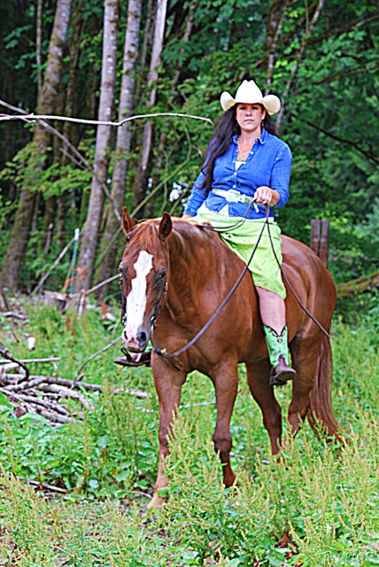
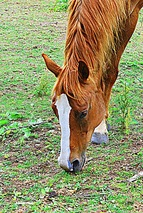
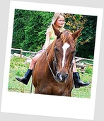
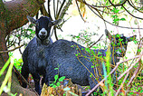
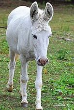
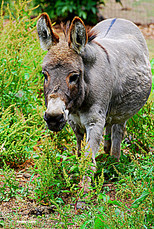

About Our Animals
Every rescued animal is given a new name at our Rancho with a sole purpose to leave the bitter days behind. It is our greatest priority to welcome each one of them as well as to provide shelter and hospitality.
Horses
Princess
Our bona fide horse royalty, Princess was born in 1991. When Princess was 2 years old, she was sent for training. When the owners visited, they noticed the damage a trainer caused to Princess: her tongue was almost cut off and wrapped in the wire; additionally, her nose was dented. Immediately, the owners took her away from the training facility and offered Princess to Tina. Instead of paying a down payment for the house, Tina acquired Princess. For a long time, Princess was panicking when someone would come up close to her on another horse. It took a lot of kindness for her to stop experience the fear. Never again was Princess abused!
Roxy
Another horse hit Roxy and Roxy’s right shoulder was broken. Given only a little time to live, Roxy did not want to give up, and neither did Tina. Tina built an apparatus to hold Roxy’s body, created a high heel to match the feet even and at the same angle. Because of the weight, Roxy was partially paralyzed after two weeks. Still, Tina was rejecting the idea to put Roxy down. Tina was preparing calcium-rich herbs (dandelions, nettles, alfalfa flowers) as well bone-knitters and then applied the medicine to the wounds. Miraculously, Roxy’s wounds healed and she was up and running again. Tina gave her a full year off from riding for the injuries to heal completely.
Rose
Rose came to the Rancho Laguna in February 2010 from Enumclaw with her daughter Ruby. Both horses were malnourished; Rose came to us weighing just 450 lbs. Soon, a loving family adopted Ruby. For the first week, neither Rose nor Ruby could lay down; their legs and backs were one big scab, covered with rain rots and lice.
Interesting fact about Rose: she is an alarm clock in the morning, pounding on the door asking for breakfast.
Lydia
Lydia is in constant need of physical activity: if none is given to her, she’ll find a project herself. As a wise educator, she will give you your problem straight to your face and will teach you to solve your problem. Lydia is a fearless girl and could not be spooked by anything. Naya, the apprising rider at the Rancho Laguna works with Lydia in a loving partnership.
Goats
Our goats Allby and Gracie would make you laugh just by looking at their cute little bodies. Allby, 2 and Gracie, 5 are pygmy-goats and love to scrub their bellies on the wood logs.
Donkeys
Elmer
Elmer came to us on March 1, 2012. He was underweight and emotionally neglected. He was covered with body lice and very hungry. We don’t know a lot about his background, but he is very social, kind and charismatic; he lets Isabella ride him.
Lil’ Rosie
By nature, every donkey needs a buddy for self-soothing. Our Lil’ Rosie, who is a Sicilian donkey, was once a star at the Christmas Tree Petting Zoo in Yelm. When her grandma passed away, Lil’ Rosie’s family thought it would be better for Rosie to find new friends at our Rancho and not to risk developing depression. Though the smallest in the pasture (just 150 lbs.), she is the boss on the Rancho Laguna!